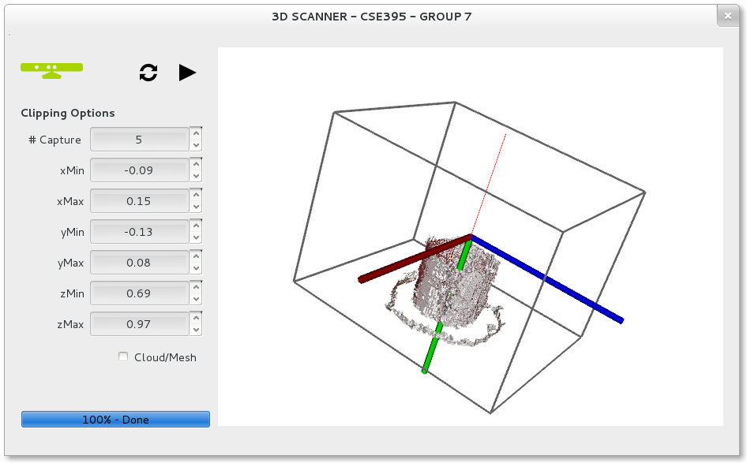

Basic 3D Scanner
Basic 3D Scanner is a simple, cross-platform 3D scanning solution using OpenNI compatible devices Kinect for XBOX, Asus XMotion and Prime Sense Carmine. Basic 3D Scanner is developed as a term project for CSE395 lecture in Computer Engineering of Gebze Institute of Technology and should not be considered as a final 3D Scanner solution.

Requirements
- OpenNI compatible device - we used Kinect for XBOX
- Stepper motor
- Driver for stepper - we used L298N
- -Optional- Arduino - we Leonardo but there is no need to use
Compiling
For compiling Basic 3D Scanner, the libraries listed below should be installed to your system.
Required Libraries
- OpenNI 1.5.40 unstable - for cross platform supporting of Kinect for XBOX
- Point Cloud Library 1.6+
- CMake - just for generating makefile
After installing the libraries above, you can generate a makefile in build directory using CMake.
$ cd repo_directory/
$ mkdir build
$ cd build
$ cmake ..
$ make
Team
- Ali Anıl Apaydın
- Fatma Çelik
- Furkan Tektaş
- Meliha Acar
- Muhammed Oğuz Yıldız